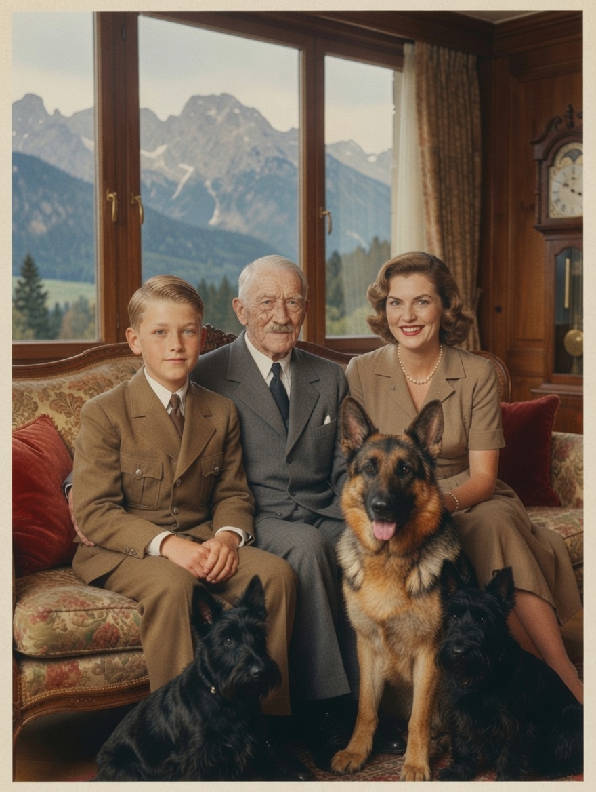
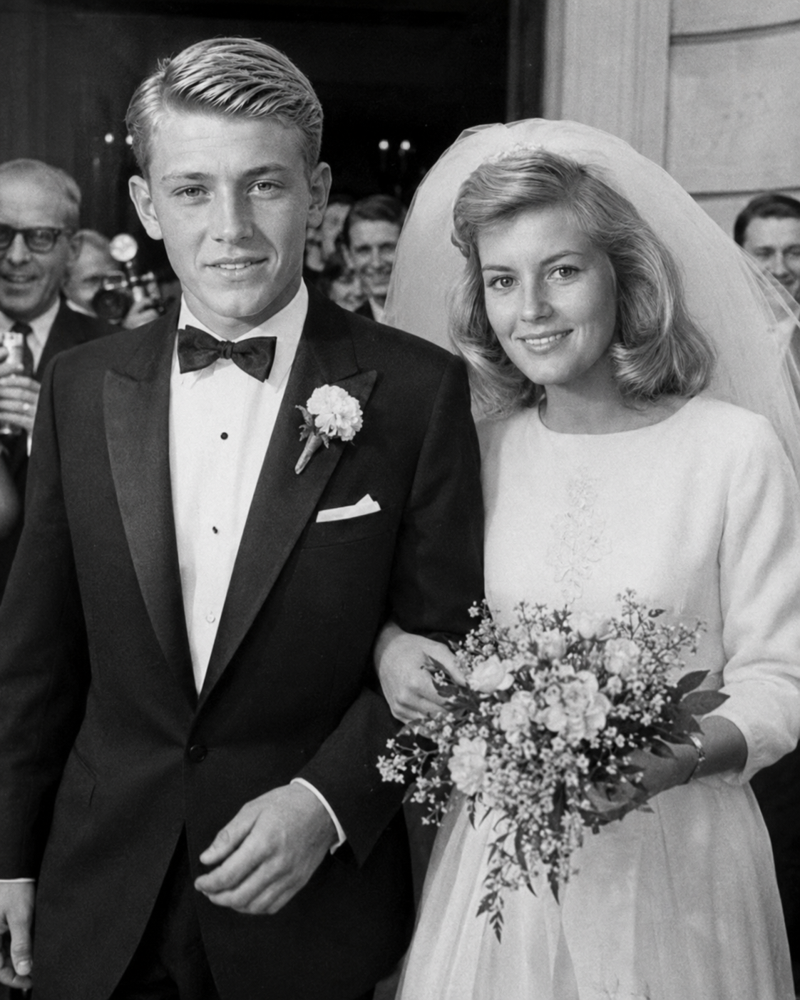

Wolfgang Friedrich Hitler is the second-generation Führer of the Greater German Reich. Born as the public “victory child” in late 1947, he inherits a racial empire and seeks to convert conquest into durable infrastructure, standards, information systems, and bounded diplomacy without repudiating the order that gives him power.
The Siegeskind
Adolf Hitler and Eva Braun enter a discreet legal marriage before Wolfgang's birth. The marriage is publicized only as needed to establish household legitimacy and later succession. Wolfgang grows up as the Siegeskind, a child made to embody victory before he can understand either the war or the state.
{kind=link}

Eva is the emotional center of his childhood. Hermann Göring becomes an affectionate political guardian. The old leadership supplies specialized lessons: Rommel in duty and professional limits; Goebbels in language and public memory; Heydrich in motives, files, and bureaucratic rivalry; Bormann in appointments and access; von Braun in the distinction between technical possibility and sustainable systems.
Personality and formation
Wolfgang is naturally observant, routine-bound, verbally gifted, imaginative, slow to trust, and not instinctively aggressive. Ceremonial education gives him a genuinely warm and curious public manner. Privately he is analytical and perfectionistic; publicly he can make technical interest feel personal.

He does not reproduce his father's charisma and does not try to. His governing aims are to preserve German primacy without fighting every rival at once, obtain information not filtered through factional “Second Drafts,” modernize without surrendering hierarchy, and internationalize achievements such as the Raumhafen and Weltnetz.
Regency and accession
Hitler dies on 12 February 1962. Göring succeeds peacefully, designates Wolfgang as eventual successor, and formalizes collective administration through the Reich Leadership Council. Wolfgang spends 1963–65 studying budgets, security, foreign affairs, and competing briefs.
Göring voluntarily transfers authority when Wolfgang turns eighteen in late 1965 and dies in 1966. Wolfgang keeps the collective machinery but creates a Personal Staff for Situation Review to receive dissenting memoranda, raw figures, and unharmonized estimates. The office is designed to prevent one chancellery or inherited faction from monopolizing reality.
Style of rule
The Iceland crisis of 1967–68 teaches bounded coercion: unused power may be more valuable than used power, and an opponent needs a dignified exit. The first Moon landing and Orbitaler Raumhafen make infrastructure and prestige his signature. Later he permits civilian computer-language experimentation, orbital incident rules, selected internationalization, and narrower demographic safeguards.

Those adjustments do not make him a liberal reformer. He accepts racial hierarchy, German clients, colonial sovereignty, and the founder's legitimacy. His political talent lies in making an inherited empire more administratively durable and less strategically impulsive.
Katharina and the ruling household
Wolfgang meets physician-in-training Katharina Elisabeth Hartmann in 1967. They marry in 1970 after a courtship shaped partly by separation during the Iceland crisis. She becomes his only near-age intimate who is neither subordinate, relative, nor inherited mentor.
{kind=link}

Their seven children are Alexander, Konrad, Johanna, Sophie, Felix, Helena, and Anna. The household is close but not presented as staffless. Katharina controls ordinary illness, discipline, schooling, friendships, meals, and bedtime; nurses, tutors, security staff, and domestic employees support rather than replace the parents. She restricts propaganda access to the children's exhaustion, illness, friendships, and distress.

Succession is designated, not automatic. Alexander begins with dynastic prestige and public ease; Konrad attracts military attention; Felix's computing interests connect the household to a networked generation. None possesses a legal birthright to rule.
Position by 1985
By 1985 Wolfgang has internationalized parts of the Raumhafen, supported Weltnetz, concluded the Tehran and Verona settlements, and learned from misjudging British endurance in the Falklands war. His Reich is more modern, informed, and diplomatically bounded than the founder's wartime state, but it remains a racial empire whose prosperity and technical ambition depend upon hierarchy and extraction.
His central contradiction is therefore personal and institutional: he wants German leadership to be materially beneficial without questioning whether the empire has the right to decide who may rule, advance, settle, or belong.